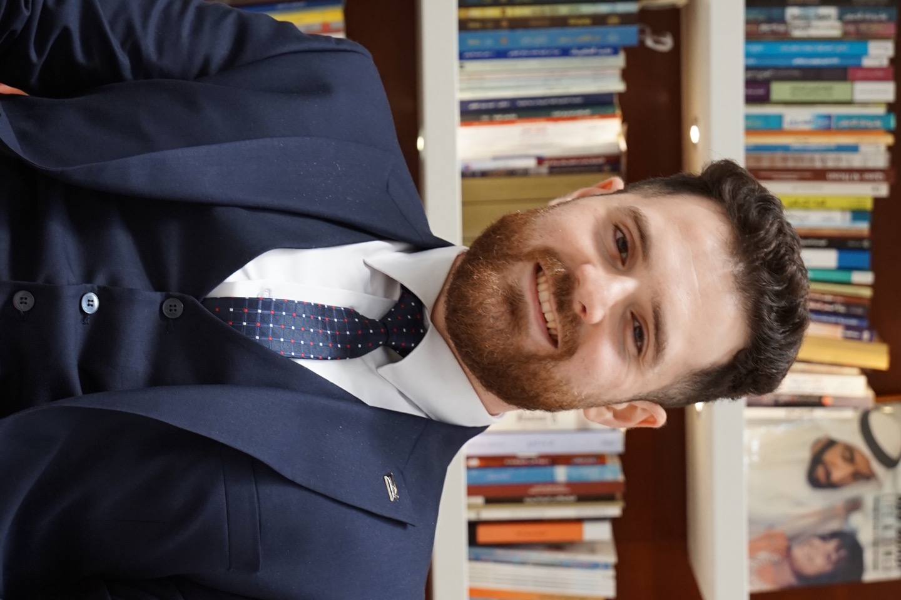

Laboratory & Research Supervisor at Al Ain University – HBRC
I am a Laboratory and Research Supervisor at the Health and Biomedical Research Center, Al Ain University, specializing in cancer cell biology and drug delivery. I work on several research projects mainly in the fields of molecular oncology and cell-based therapeutics, while guiding postgraduate students in advanced cell culture techniques and experimental design to support translational cancer research. Passionate about bridging laboratory innovation with real-world therapeutic impact, I strive to advance precision medicine through continuous learning, collaboration, and the pursuit of my PhD studies.

© 2025 Molham Sakkal, a fork of ScholarSite_2.0